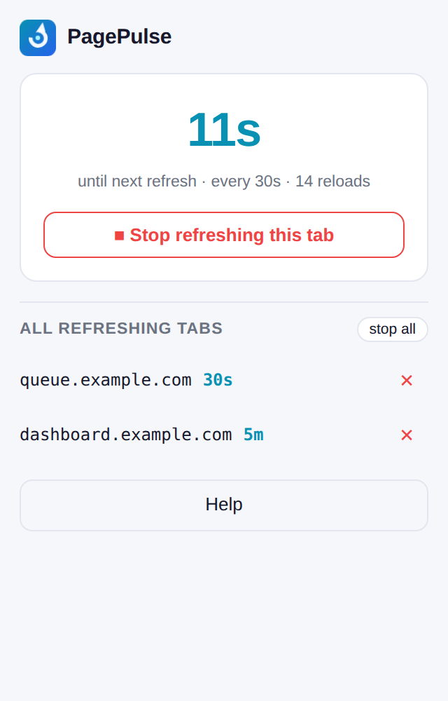
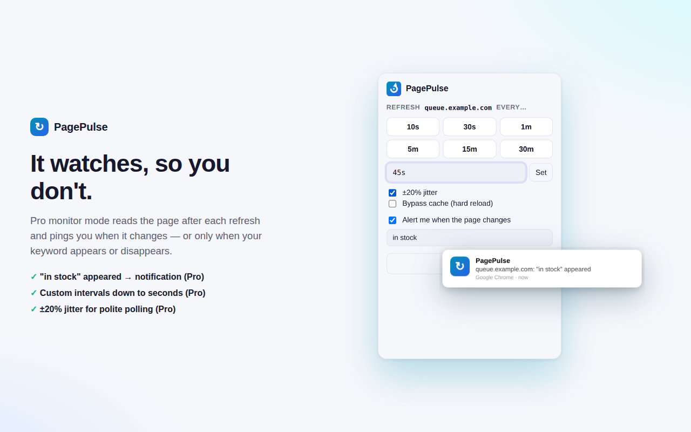

Auto-refresh any tab on your schedule — queues, dashboards, drops, scores — with a live countdown on the toolbar badge. Nothing leaves your machine.
Free forever with presets 10s–30m · Pro is $9 once — no subscription, ever

Whatever you\'re waiting on — the ticket queue, the deploy, the restock — PagePulse keeps the tab current and tells you how long until the next pulse.
Each tab gets its own interval, from 10 seconds to 30 minutes. Close the tab and its job cleans up.
The toolbar badge ticks down to the next refresh — 9s, 45s, 3m — so you know the pulse is alive.
Every refreshing tab with host and interval. Stop one, stop all. Jobs survive browser restarts.
Get a notification when the page changes — or only when "in stock" appears or "sold out" disappears.
Type 45s, 2m, or 1.5h. Down to seconds for the drops that matter.
±20% randomization so your polling doesn\'t look like a metronome hitting the same second.

The free tier covers most people. Pro is an impulse price, once.
No — refreshing uses the tab\'s id only. The Pro monitor feature is the one exception: it reads the text of pages you explicitly enabled monitoring on, after asking for permission for that specific site.
Second-level. A recovery alarm re-arms the timers if Chrome suspends the extension in the background, so long intervals stay accurate too — jobs even survive full browser restarts.
After each refresh, PagePulse checks the page text. With a keyword set, you\'re notified when it appears or disappears ("in stock", "tickets available", "passed"). Without one, any content change triggers the alert.
Use judgment — refreshing a page every few seconds is the same as pressing F5 that often, and some sites rate-limit it. Pro\'s ±20% jitter helps your polling look human, but respect each site\'s terms.
Yes. $9 once, all Pro features forever, every future update included. Payments are processed by Stripe via ExtensionPay; we never see your card details.
See how PagePulse stacks up against the ad-supported incumbents — honestly.